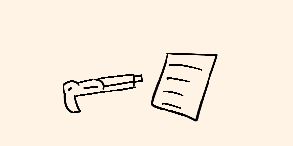

No recuerdo la última vez que vi el sol sin esa capa oscura de polvo en el horizonte. Las ciudades están muertas, Pelstrot es un cementerio. El silencio es ensordecedor. A veces, lo único que escucho es mi propia respiración o el crujido de mis botas sobre el asfalto resquebrajado. Llevo semanas caminando solo, buscando suministros, esquivando sombras, y enfrentándome a esos que alguna vez fueron humanos.
Los llamamos "los poseídos", aunque no sé si el término les hace justicia. Hay algo en ellos, algo más allá del parásito que los consume. No son simples cadáveres ambulantes; parecen tener un propósito, una especie de instinto. La primera vez que me enfrenté a uno, fue casi mi fin. Un hombre, o lo que quedaba de él, me atacó en lo que alguna vez fue una tienda de abarrotes. Su piel estaba rota y reseca, y tenía esos fragmentos negros adheridos a su cuello y manos. Casi se me sale el corazón cuando me lanzó al suelo. No sé cómo logré golpearlo con suficiente fuerza como para derribarlo. Desde entonces, siempre llevo un machete en la mano, y nunca bajo la guardia.
La comida es escasa, y lo que queda se está pudriendo rápidamente. He aprendido a cazar en los bosques fuera de la ciudad, pero incluso ahí, la caza es peligrosa. Los animales también parecen estar infectados, su carne ennegrecida y sus ojos vacíos me indican que no son seguros para comer. En lugar de eso, dependo de las raciones enlatadas que encuentro en los lugares más escondidos. Nadie revisa las casas quemadas, así que es allí donde suelo encontrar mis mejores hallazgos.
La soledad es peor que el hambre. Hablar conmigo mismo se ha vuelto un hábito; a veces, creo escuchar voces en las calles vacías, pero sé que es solo mi mente jugándome trucos. No puedo permitir que la desesperación me controle. Tengo un objetivo: llegar al sur, cruzar la frontera hacia Siloon. Se dice que allí las cosas no son tan malas, que hay campamentos para los pocos que lograron sobrevivir. Tal vez ahí encuentre respuestas, o al menos un refugio seguro.
Cada noche es un juego de vida o muerte. Los poseídos son más activos cuando cae la oscuridad. Aprendí a construir refugios improvisados en las azoteas de los edificios, donde la altura me da una ligera ventaja. Las barricadas y las trampas se han vuelto mi especialidad. A veces los escucho deambular por las calles, moviéndose en grupo, comunicándose con gruñidos y chillidos. Sé que están buscando algo, quizás otros como yo.
No siempre estoy solo, o al menos no lo estaba. Hace una semana encontré a un hombre en un edificio abandonado. Estaba malherido, con fiebre alta y una profunda herida en su pierna. Traté de ayudarlo, pero la infección ya había avanzado demasiado. Me rogó que lo matara, pero no pude hacerlo. La infección se encargó de él, y tuve que huir antes de que su grito de agonía atrajera a más de esas criaturas.
Pese a todo, aún hay esperanza. La llevo en mi bolsillo: un pequeño mapa dibujado a mano, con una ubicación marcada en el sur. Dice "Refugio Seguro". No sé quién lo escribió ni si realmente existe, pero es lo único que me mantiene en pie. He aprendido a vivir en la ruina, a moverme sin ser visto, a cazar en la penumbra. Y, si el refugio no está ahí cuando llegue, seguiré adelante.
He perdido a todos los que conocía, mi familia, mis amigos... pero me niego a perderme a mí mismo. Hay algo que aún vale la pena proteger en este mundo, aunque sea una simple chispa de humanidad. El parásito puede haber destruido nuestras ciudades, pero no destruirá mi voluntad.
Por ahora, seguiré mi camino, siempre hacia el sur, siempre buscando la luz en medio de la oscuridad. No me detendré hasta encontrar un lugar seguro o hasta que mi cuerpo ya no pueda dar un paso más. Porque mientras yo esté vivo, hay esperanza, y mientras haya esperanza, la lucha no habrá terminado.
